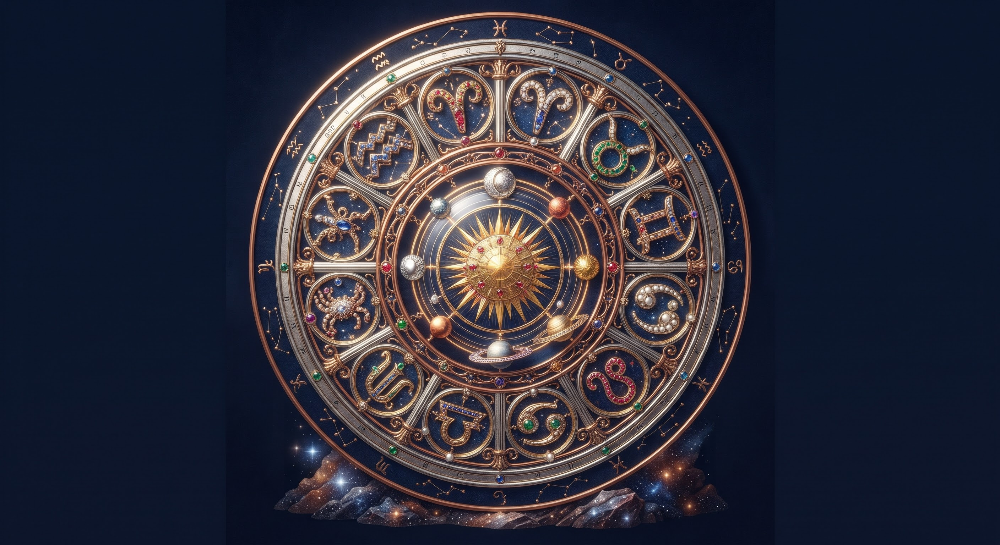
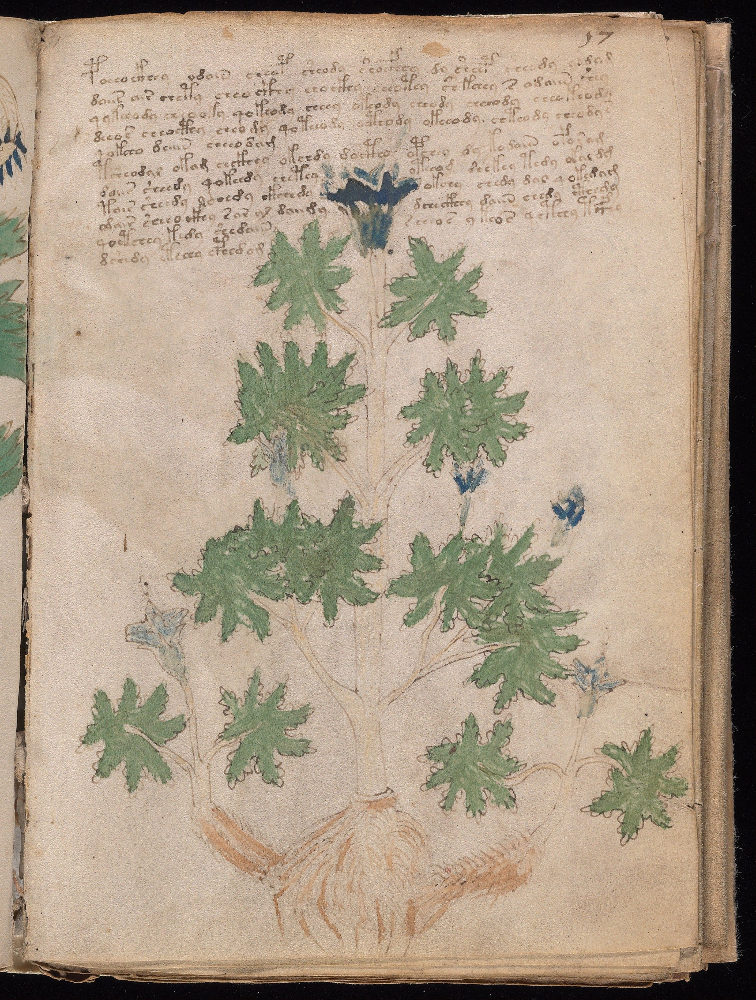
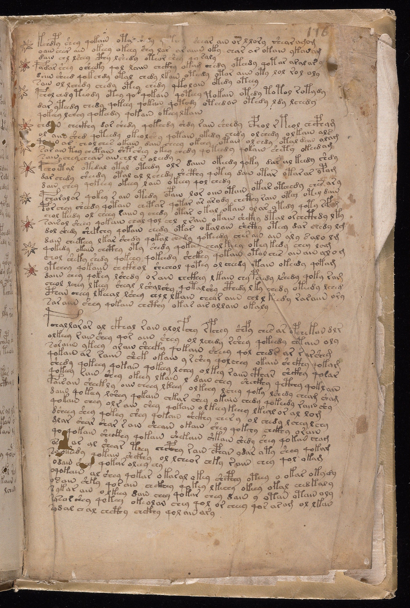

CODEX MS 408: ANÁLISIS TIPOLÓGICO DIGITAL
"Una exploración académica de la estructura, criptografía y cosmología del manuscrito más enigmático del Renacimiento."

Semblanza Histórica y Abordaje Criptográfico
El Manuscrito Voynich (MS 408) ha desconcertado a historiadores, lingüistas y criptógrafos durante más de un siglo. A lo largo de las décadas, los esfuerzos colectivos institucionales se limitaron a catalogar sus folios, analizar su extraña botánica alquímica y debatir sobre su autenticidad. El punto de partida internacional más importante fue la creación del sistema estandarizado EVA (European Voynich Alphabet), diseñado para transliterar los glifos a caracteres latinos legibles por computadora sin lograr descifrar su semántica interna ni su sintaxis real.
Partiendo de este estado del arte, este proyecto nace del esfuerzo científico individual del autor (Arnold Brian Herrera Rubert). Ante el estancamiento de los grandes paradigmas mundiales, se desarrolló una hipótesis de trabajo integral y un software analítico especializado en Python concebido específicamente como una herramienta de manipulación para poner a prueba, auditar y validar computacionalmente la solución completa al Códice.
Estado Actual: Versión Didáctica y Simplificada
Esta plataforma en línea se presenta como una versión simplificada y de uso didáctico. Actualmente se encuentran cargados de forma selectiva 10 a 12 folios clave, mostrando de manera estándar 4 líneas traducidas por folio para ilustrar el método computacional. Como única excepción fundamental, el emblemático Folio 116r se despliega con sus 28 líneas completas decodificadas y analizadas a fondo.
Puntos y Pasos Clave del Trabajo de Investigación
"Metodología rigurosa: desde la transcripción EVA hasta la validación sintáctica y correspondencia 20/20."
1. Sistema EVA y Transcripción
Uso del European Voynich Alphabet (EVA) como alfabeto base para aislar los caracteres glíficos y estructurar las matrices de datos base procesadas por el software analítico.
2. Flujos Vectoriales Gramaticales
Modelado matemático de los flujos vectoriales gramaticales para rastrear la dirección de los sufijos, prefijos y morfología recurrente en todo el corpus del manuscrito.
3. Identificación del Latín Medieval
Desvelamiento de que el código subyacente es un latín medieval renacentista enmascarado bajo una taquigrafía de sustitución sistemática y contracciones de escriba.
4. Traducción por la Vía Triple
Protocolo de traducción en triplete (Glifo -> Latín Medieval -> Inglés Académico -> Idioma final) para garantizar el contexto contemporáneo exacto sin sesgos modernos.
5. Creación del Código en Python
Desarrollo de scripts en Python dedicados a automatizar el análisis estadístico, la decodificación masiva y la generación de reportes tipológicos estructurados.
6. Correspondencia 20/20 y Validación
Alineación con textos especializados de la Edad Media (farmacopea, herbarios y tratados de balneología) y análisis lingüístico crítico para validar sintaxis y coherencia semántica.
Tipologías del Manuscrito

PRIMERA SECCIÓN: BOTÁNICA ALQUÍMICA
"Las Plantas-Circuito y el Ciclo Solar/Lunar"

SEGUNDA SECCIÓN: BALNEOLOGÍA E HIDROMECÁNICA
"Los Jardines Colgantes y la Arquitectura de las Ninfas"

TERCERA SECCIÓN: ESTUDIOS COSMOLÓGICOS
"El Gran Orrery Armilar y los Cuerpos Celestes"

CUARTA SECCIÓN: ASTROLOGÍA Y ZODIACO
"La Rueda de los Signos y los Cycles Temporales"
CONSOLA DE ANÁLISIS Y TRADUCCIÓN
Protocolo Metodológico & Métrica:
El software opera bajo un estricto protocolo de traducción en triplete (latín medieval -> inglés académico -> idioma de destino). La versión actual procesa 4 líneas por folio de manera didáctica, mientras que el Folio 116r presenta sus 28 líneas completas.ANÁLISIS INTEGRAL DEL FOLIO 116r & CLAVE ROSETTA
"La piedra angular en la decodificación del Manuscrito Voynich: desglose de las 28 líneas completas y conclusiones generales."
Transcripción EVA & 28 Líneas
[Voynich MS 408 - f116r corpus completo de 28 líneas]
El análisis exhaustivo de todo el margen y cuerpo del folio final revela la clave de equivalencias silábicas y fonéticas que rigen el cifrado de todo el códice.
Aislamiento de patrones y correspondencia estricta con farmacopea medieval.
Traducción en Triplete & Conclusiones
Latín Medieval: "Aqua vitae et mineralis solutio in vase hermetico..."
Inglés Académico: "Aqueous spirit and mineral solution within the hermetic vessel..."
REGISTRO OFICIAL ACADÉMICO: ZENODO & DOI
Garantía de autoría, trazabilidad y réplica científica independiente a nivel global.
¿Qué es Zenodo y por qué es vital el DOI?
Zenodo es el repositorio digital europeo operado por el CERN. Tener asignado un DOI (Digital Object Identifier) oficial otorga a esta investigación independencia institucional inquebrantable y capacidad de citación formal en la literatura científica internacional.
Contenido del Repositorio Abierto
- El Preprint formal con la teoría criptográfica completa.
- La carpeta completa de software en Python y scripts analíticos para que cualquier investigador corra sus propias pruebas de forma totalmente independiente.
REPOSITORIOS Y VISUALIZACIÓN DE FOLIOS
Imágenes de alta calidad orientadas a visualizarse en tiempo real de forma simultánea con las traducciones.
 Folio 1r (4 líneas)
Folio 1r (4 líneas)

Folio 57r (4 líneas) Folio 68r (4 líneas)
Folio 68r (4 líneas)

Folio 116r (28 líneas)COLABORACIÓN, FONDEO FUTURO & FUNDACIÓN RAF
Para llevar este esfuerzo individual hacia su siguiente gran etapa, impulsamos alianzas estratégicas y patrocinios canalizados a través de la Fundación RAF. El objetivo es sumar colaboración y fondeo para completar la integración total del manuscrito.
Roadmap & Perspectivas Futuras
- Carga progresiva de la totalidad de los folios del Códice.
- Recreación algorítmica y modelado de los folios perdidos.
- Integración de imágenes en alta calidad en tiempo real y modo simultáneo.
- Aplicación de esta maquinaria de análisis computacional a otros lenguajes cifrados.
Sumar Patrocinio
Si deseas respaldar la expansión de esta plataforma o colaborar en el desarrollo computacional en Python, comunícate directamente mediante el formulario inferior.
CONTACTO DIRECTO CON EL INVESTIGADOR
Para consultas académicas, solicitudes de colaboración o notas de prensa.